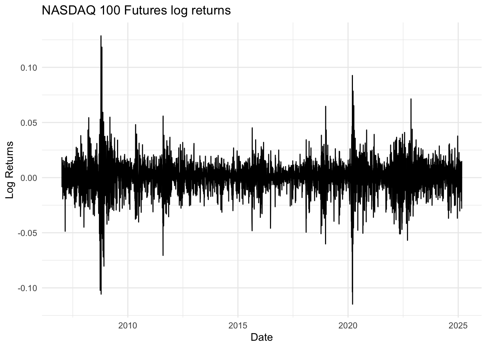
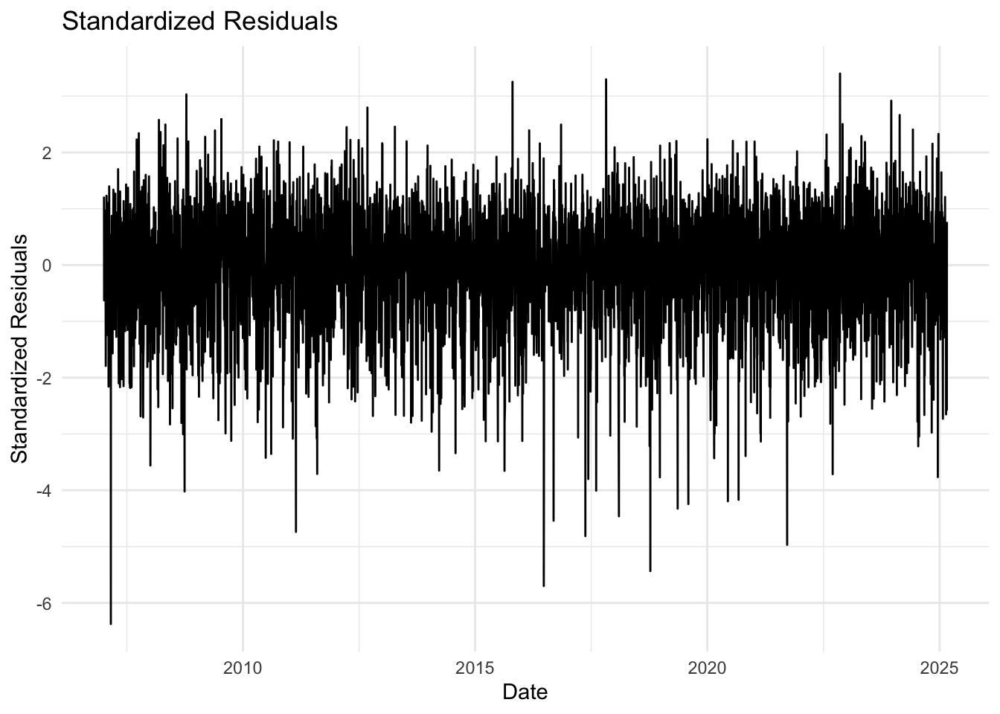
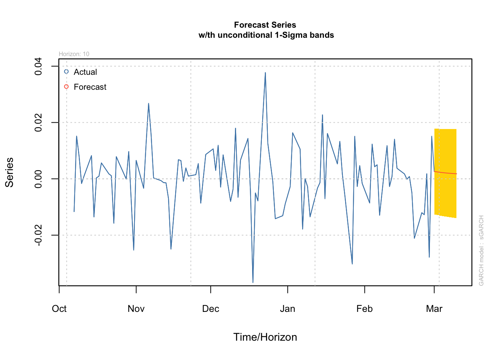

In this post we will generate a basic GARCH(1,1) model applied to NASDAQ 100 future prices. The main objetive is to understand the basics of modeling such time series given that they met certain conditions, such as heteroskedasticity.
The Generalized Autoregressive Conditional Heteroskedasticity (GARCH) model is a widely used time series analysis technique for modeling the volatility of financial data. It was first introduced by Bollerslev in 1986 as an extension of the earlier ARCH (Autoregressive Conditional Heteroskedasticity) model proposed by Engle in 1982.
The key idea behind GARCH modeling is that the variance of the error term in a time series model is not constant, but rather varies over time ina predictable way. This time-varying volatility is captured through the specification of the conditional variance equation, which models the variance as a function of past squared errors and past variances.
Matematically, the GARCH(p,q) model can be expressed as:
\(z_t\) is a white noise process with zero mean and unit variance
\(\omega, \alpha_i, \beta_j\) are the model parameters to be estimated
GARCH modeling offers several advantages over traditional time series analysis techniques:
Capturing Volatility Clustering: GARCH models are able to capture the phenomenon of volatility clustering, where periods of high volatility tend to be followed by periods of high volatility, and periods of low volatility tend to be followed by periods of low volatility.
Improved Forecasting Accuracy: by modeling the time-varying variance, GARCH models can provide more accurate forecasts of future volatility compared to models that assume constant variance.
Risk Management: GARCH models can be used to estimate the Value-at-Risk (VaR) and other risk measures, which are important for financial risk management.
Flexibility: GARCH models can be extenden in various ways, such as incorporating asymmetric effects (EGARCH) or long-memory effects (FIGARCH), to better capture the characteristics of the data.
Disadvantages and Limitations
While GARCH modelling is a powerful tool, it also has some limitaitons and drawbacks:
Complexity: GARCH models involve the estimation of multiple parameters, which can be computationally intensive, especially for high-frequency data or models with many lags.
Sensitivity to Model Assumptions: GARCH models rely on specific assumptions, such as the distribution of the error terms. Violations of these assumptions can lead to biased or inefficient parameter estimates.
Difficulty in Interpreting Parameters: The interpretation of the GARCH model parameters can be challenging, as they represent the complex dynamics of the conditional variance process.
Potential for Misspecification: if the underlying data-generating process is not well-captured by the GARCH model, the model may produce biased or inaccurate results.
In this posts we will explore a basic EDA and workflow regarding GARCH modeling.
Exploratory Data Analysis
First we download the NASDAQ 100 futures data and prepare it for the initial analysis:
# Extract adjusted closing pricesprices <-Cl(`NQ=F`)# Calculate log returnsreturns <-diff(log(prices))# Remove NA valuesreturns <- returns[!is.na(returns)]# Plot the returnsggplot(data.frame(Date =index(returns), Returns =as.numeric(returns)), aes(x = Date, y = Returns)) +geom_line() +theme_minimal() +labs(title ="NASDAQ 100 Futures log returns", x ="Date", y ="Log Returns")

After downloading the required data, we calculated log returns and generated a plot.
Log returns are commonly used in financial modeling because they’re additive over time and tend to be more normally distributed than simple returns, which also helps “flatten” possible outliers that may interfere with the model fitting part.
Preliminary Statistical Test
Before fitting a GARCH model, we need to check if our data exhibits characteristics that make a GARCH model appropriate. We’ll perform several statistical tests:
Test for stationarity
The Augmented Dickey-Fuller test checks for stationarity. A p-value less than 0.05 suggests the series is stationary, which is a requirements for GARCH modeling.
adf_test <-adf.test(returns)print(adf_test)
Augmented Dickey-Fuller Test
data: returns
Dickey-Fuller = -16.481, Lag order = 16, p-value = 0.01
alternative hypothesis: stationary
Test for Serial Correlation
The Ljung-Box test checks for serial correlation. A low p-value suggests the presence of serial correlation, which might be addressed by including an ARMA component in our GARCH model.
lb_test <-Box.test(returns, lag =10, type ="Ljung-Box")print(lb_test)
The ARCH LM test checks for the presence of ARCH effects (heteroskedasticity). A low p-value indicates the presence of ARCH effects, suggesting that a GARCH model might be appropriate.
The Jarque-Bera test checks for normality. A low p-value indicates non-normal distribution, which is common in financial returns and often addressed by using a Student’s t-distribution for the GARCH model.
jb_test <-jarque.bera.test(returns)print(jb_test)
Jarque Bera Test
data: returns
X-squared = 13137, df = 2, p-value < 2.2e-16
Descriptive Statistics
The descriptive statistics provide additional insights into the distribution of returns, including skewness and kurtosis.
mean sd skewness kurtosis
0.0005375851 0.0141310429 -0.3253572664 8.2800525073
GARCH Model Fitting
Based on the results of our preliminary tests, we’ll now fit a GARCH model to our data.
Here, we’ve specified a GARCH(1,1) model with an ARMA(1,1) mean model and a Student’s t-distribution for the errors. The summary() function provides detailed information about the fitted model, including parameter estimates and various diagnostic statistics.
# Specify GARCH modelspec <-ugarchspec(variance.model =list(model ="sGARCH",garchOrder =c(1,1)),mean.model =list(armaOrder =c(1,1)),distribution.model ="std")# Fit the modelfit <-ugarchfit(spec, returns)
Model Diagnostics
After fitting the GARCH model, we should check if it has adequately captured the volatility dynamics of our data.
As these test show no significant serial correlation (p-value > 0.05), it suggest that the GARCH model has adequately captured the volatility dynamics.
# Extract standardized residualsstd_resid <-residuals(fit, standardize =TRUE)# Ljung-Box test on standardized residualsprint("Ljung-Box Test on Standardized Residuals:")
[1] "Ljung-Box Test on Standardized Residuals:"
print(Box.test(std_resid, lag =10, type ="Ljung-Box"))
Now we run the diagnostic on squared standardized residuals, in which we obtain a good model indicating that there is no serial autocorrelation within our model:
# Ljung-Box test on squared standardized residualsprint("Ljung-Box Test on Squared Standardized Residuals:")
[1] "Ljung-Box Test on Squared Standardized Residuals:"
print(Box.test(std_resid^2, lag =10, type ="Ljung-Box"))
and create a plot to visualize our model on standardized residuals:
# Plot standardized residualsggplot(data.frame(Date =index(returns), Residuals =as.numeric(std_resid)), aes(x = Date, y = Residuals)) +geom_line() +theme_minimal() +labs(title ="Standardized Residuals", x ="Date", y ="Standardized Residuals")

Forecasting Volatility
Let’s use our fitted GARCH model to forecast future volatility, by estimating the next 10 periods.
# Forecast volatilityforecast <-ugarchforecast(fit, n.ahead =10)plot(forecast, which =1)

Finally, we calculate the Value at Risk (VaR) based on our GARCH model:
VaR <-quantile(fit@fit$residuals, 0.05)print(paste("5% Value at Risk:", VaR))
[1] "5% Value at Risk: -0.0241682999576284"
the 5% VaR represents the loss that we would expect to be exceeded only 5% of the time, based on our GARCH model.
Conclusion
GARCH models are powerful tools for modeling financial time series, particularly when dealing with volatility clustering and heteroskedasticity. However, it’s important to remember that all models are simplifications of reality, and careful interpretation and validation are always necessary.